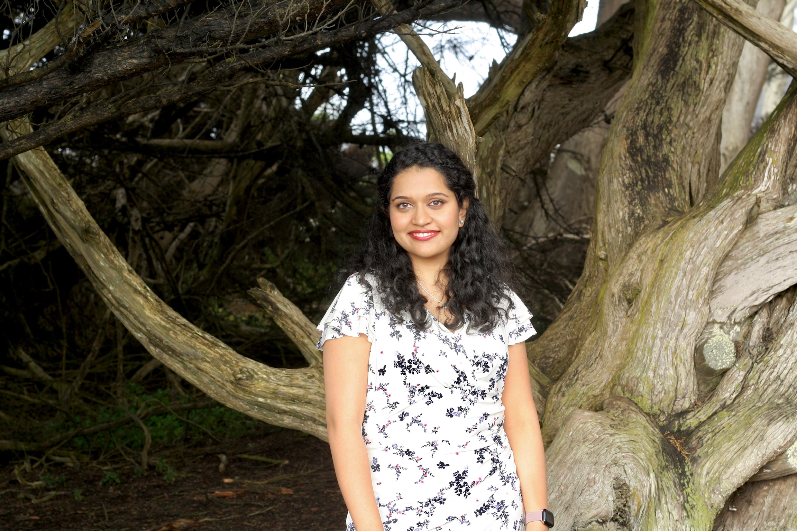

About Me

I use machine learning to study and address problems that disproportionately affect women but historically have been disproportionately ignored.
That conviction did not come from a research paper. It came from living with endometriosis, PCOS, adenomyosis, and other comorbidities that went undiagnosed for decades. The same years I spent building ML systems and earning my Masters in Computer Science, I was also quietly navigating a body the medical system had given up trying to understand. That gap — between what I was capable of professionally and what I was being told about my own health — pushed me toward a question I could not let go of: how much of what women experience is simply not being measured, modeled, or taken seriously enough to show up in the research?
Motherhood added a new dimension to that question. The postpartum experience makes visible just how much of what women go through gets quietly reclassified as personal rather than medical: matrescence, maternal mental health, the cognitive and emotional load of caregiving. It is not that these experiences are rare. It is that we have not built the infrastructure to study them properly.
Today I bring 7+ years of production ML experience to that work. Through The Jackson Laboratory's EndoRISE program, I work with endometriosis patient data in collaboration with a single-cell biology lab, focusing on patient stratification and relationships between inflammation markers and immune comorbidities. In parallel, I conduct independent ML research on maternal mental health, building NLP tools for perinatal mental health support and interrogating whether the AI systems we build for maternal health actually measure what they claim to measure, and for whom. I am also building HealthSteward, a privacy-first agentic AI health coordination system I started for myself. Managing multiple chronic conditions means keeping track of more providers, records, appointments, and follow-ups than any one person should have to hold in their head. The repository is public on GitHub under a GPLv3 license.
Before pivoting to research, I spent 6+ years at Autodesk building and leading ML products at scale: recommendation engines, NLP platforms, and applied AI systems serving hundreds of thousands of daily users. I served as my organization's Privacy Champion, vetting AI and ML projects for data ethics, PII compliance, and open-source legal standards. I also served on the founding Impact Measurement Committee of the Autodesk Women Network ERG, where I led a team of data volunteers focused on measuring and quantifying the disparities the organization should target and tracking actual impact over time. From day one as a new grad, I volunteered for pro bono consulting projects through the Autodesk Foundation, contributing ML and data expertise to nonprofits and startups working on workforce development and social impact.
Giving back has always been part of how I work. I have been a member of Asha for Education for nearly a decade, volunteering and fundraising for causes centered on education and the upliftment of women, children, and underserved communities. At Autodesk, I led the Girls Who Code program for two years and helped organize the TechWomen initiative.
Outside of research and building, Bharatanatyam, an Indian classical dance form, has been part of my life since the age of four. 25+ years of practicing an art form like Bharatanatyam teaches you things no classroom does: about patience, about precision, about showing up for something difficult day after day. There is more overlap between classical dance and research than people expect. Both tell stories through structure, both demand rigor, and both require you to hold complexity without losing the thread. It keeps me grounded in a way that technical work alone never could. I am currently three years into a formal degree in Kathak, a second classical dance form. Apparently I am drawn to long, demanding, deeply rewarding commitments.
I am actively exploring full-time Machine Learning Engineer opportunities, remote or hybrid in the SF Bay Area. If you want to collaborate on research at the intersection of ML and women's health, I would love to hear from you.
Download Resume